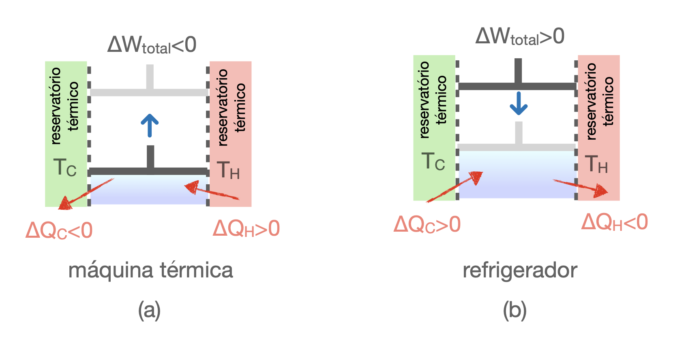

O sistema percorre um ciclo e retorna ao estado inicial. Assim, a Primeira Lei reduz-se ao balanço entre calor total e trabalho total. O diagrama abaixo fixa os sinais usados em todo o capítulo.

| Máquina térmica | |
|---|---|
| Fonte fria | \(\Delta Q_C<0\) |
| Fonte quente | \(\Delta Q_H>0\) |
| Trabalho líquido | \(\Delta W<0\) |
| Balanço | \(\Delta Q_H+\Delta Q_C=-\Delta W\) |
| Refrigerador | |
|---|---|
| Fonte fria | \(\Delta Q_C>0\) |
| Fonte quente | \(\Delta Q_H<0\) |
| Trabalho líquido | \(\Delta W>0\) |
| Balanço | \(\Delta W=-(\Delta Q_H+\Delta Q_C)\) |